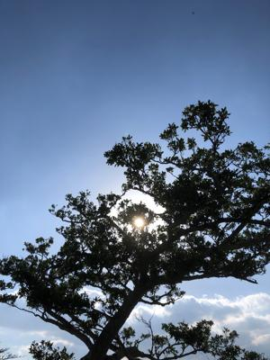
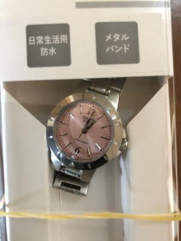
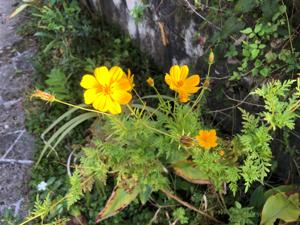

うるがいの話 ある日
最新: 時計のベルト【うるがいの話 ある日】とは 一日だけのプログです
『うるがいの話』の最新一日だけのプログで、通信料が少なく経済的だ。カニの画像をクリックすると全ての日付が載る『うるがいの話』サイトを表示します
|
|
【うるがいの話】 うるがい(ｳﾙｶﾞｲ urugai)とは、『もずくがに』の名前でとても大きくなります。 |
|---|---|
|
|
【カミマヤーの話】 猫のことを方言でマヤーといいます。カミマヤー（kamimayaa）とは、神の猫のことです。 |
|
【たながぁの音楽】 たながぁ（ﾀﾅｶﾞｰtanagaa）とは手長えびのことで、何種類かあり大きいのは車 エビぐらいになります。 |

|
【ぶながぁの話】 ぶながー(bunagaa)とは、赤い髪の毛、赤い身体、そして身長は１ｍ２０ｃｍ ぐらい、川の蟹を食べているの目撃された。場所は沖縄県国頭郡大宜味村のと ある村僕の隣近所に住んでいる爺さんから、聞いた話です。 |
|
|
【ギーマの話】 ギーマ(giima)とは、山原の里山に咲くスズランに似た、 花を付けます。実は食べられます、 気が付くと口の周りが紫になっています。 |
2022年03月11日 (金）時計のベルト
16:09
 
ヨメのお母さんが、腕時計を持ってきてほしいという。ヨメは一生懸命探すが
ない。そこで、疲れているヨメに頼まれ私一人が、４千円以下で腕時計を買う
羽目になった。津嘉山サンエーに病院へ送り届けるためのバスタオル等と一緒
に買うことにした。ない、ない、６千円以上は沢山あるのだが・・・、子供の
使いじゃないのでイオン南風原へいく、見つけた３千３百円のものが。一応こ
れでミッションは果たしたぜと家に持って帰るなり、ヨメが時計をつけてみる
ゆるゆる、全然ゆるゆる、これではダメ。え、時計のベルトって調整したっけ
？と仕方ないのでお店に電話して相談しよう。とレシートにあった電話番号へ
かけてみる。この電話番号は使われていません、ん？、ネットでお店の電話番
号を調べる。レシートに表示している電話番号３が正しくは８だった。電話の
架電履歴をみると誤った電話番号０９８―３５１―９３９４は宮崎県児湯郡（
こゆぐん）と表示されている。ヨメを連れて時計店へ、女性の店員さんが５分
程かけて調整した。『買うときに一言ベルトの調整が必要と言えば良かったで
すね、スミマセン』と。９時に家をでて再び家にもどったら１２時半になって
いた。

おとといから、「カミマヤーの話」のプログのアップデートがエラーとなる。
一応解決したつもりだったが、昨日もエラーとなった。さて今日はどなるやら
こうしてジワジワと疲れが溜まっていくのであった。
１５時５７分 ビットコインの総資産 ￥１３、１７３↑